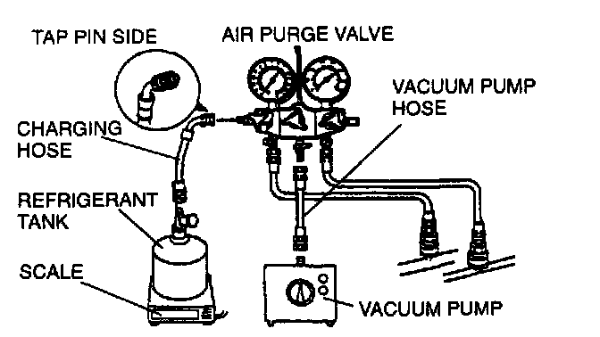
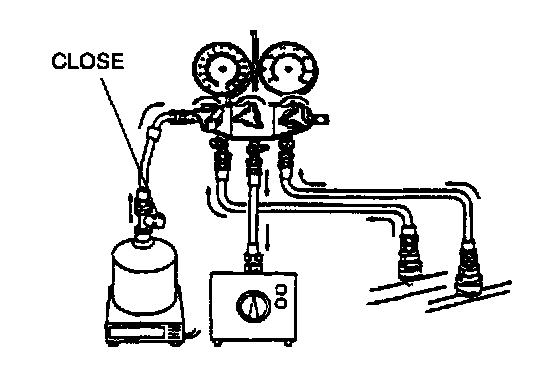
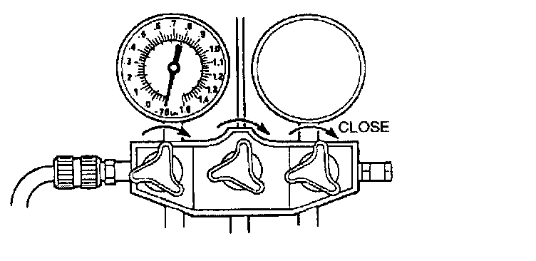
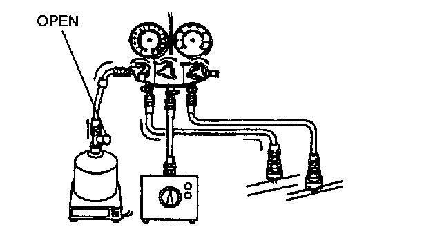
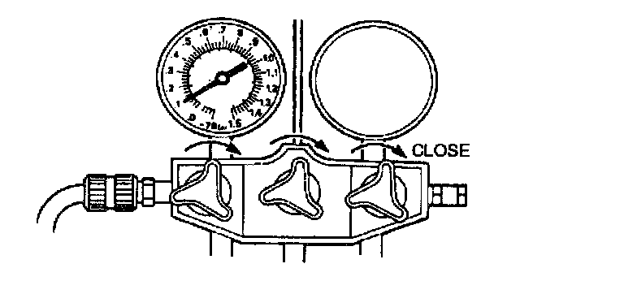
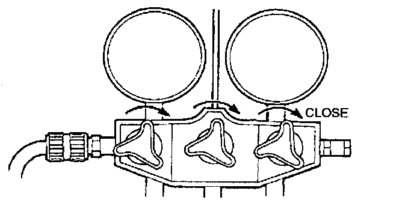
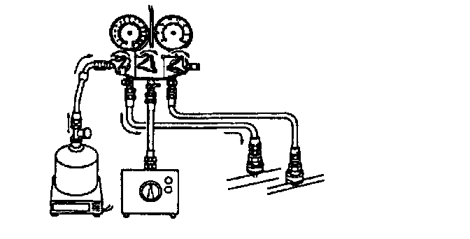
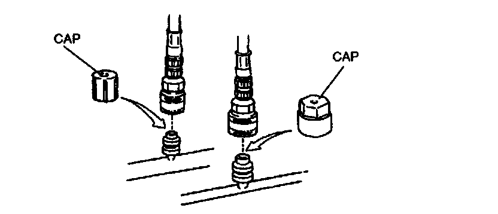

Charging the System
REFRIGERANT CHARGING
1. Install the manifold gauge set.
2. Connect the tap pin side of the charging hose to the air purge valve of the manifold gauge.
3. Connect the vacuum pump hose to the center joint of the manifold gauge.
4. Connect the vacuum pump hose to the vacuum pump.
5. Connect the charging hose to the refrigerant tank.
6. Place the refrigerant tank on the scale.
Regular amount of refrigerant
600 g (21.2 oz)

7. Open all the valves of the manifold gauge.
8. Start the vacuum pump and let it operate for 15 minutes.

9. Verify that the high- and low-pressure side readings of the manifold gauge are at -101 kPa (-760 mmHg, -29.9 inHg). Close each valve of the manifold gauge.
10. Stop the vacuum pump and wait for about 5 minutes.
11. Check the low-pressure side reading of the manifold gauge. If the reading has changed, check for leaks and then repeat from step 7. If the reading has not changed, go to step 12.
12. Open the valve of the refrigerant tank.
13. Weigh the refrigerant tank.

14. Open the low-pressure side valve of the manifold gauge.

15. When the low-pressure side reading increases to 0.1 MPa (1 kg/sq.cm, 14 psi), close the low-pressure side valve of the manifold gauge.
16. Check for leaks from the cooler pipe/hose connections by using a gas leak tester. If there are no leaks, go to step 17. If a leak is found at a loose joint, tighten the joint and check for leaks again. If there is still a leak at the same joint, discharge the refrigerant and then repair the joint. Repeat the charging procedure from step 7. If there are no leaks after tightening the joint, go to step 17.
17. Open the low-pressure side valve of the manifold gauge and charge with refrigerant until the weight of the refrigerant tank has decreased 300 g (10.6 oz) from the amount in step 13.

18. Close the low-pressure side valve of the manifold gauge.
WARNING: Running the engine with the high-pressure side valve open is dangerous. Pressure within the service cans will increase and the cans could explode, scattering metal fragments and liquid refrigerant that can seriously injure you. Therefore, do not open the high-pressure side valve while the engine is running.
19. Start the engine and actuate the A/C compressor.

20. Open the low-pressure side valve of the manifold gauge and charge with refrigerant until the weight of the refrigerant tank has decreased 600 g (21.2 oz) from the amount in step 13.
21. Close the low-pressure side valve of the manifold gauge.
22. Stop the engine and A/C compressor.
23. Check for leaks by using a gas leak tester. If there are no leaks, go to step 24. If a leak is found at a loose joint, tighten the joint and check for leaks again. If there is still a leak at the same joint, discharge the refrigerant and then repair the joint. Repeat the charging procedure from step 7. If there are no leaks after tightening the joint, go to step 24.
24. Disconnect the high- and low-pressure side quick couplers from the charging valves.

25. Install the caps to the charging valves.